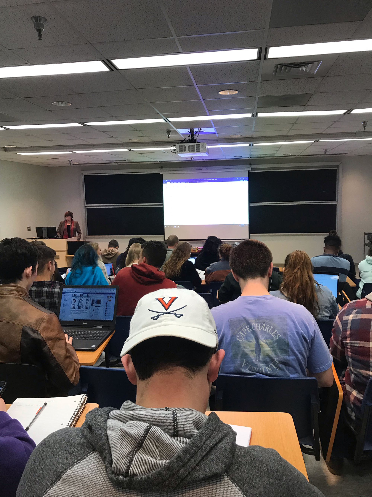
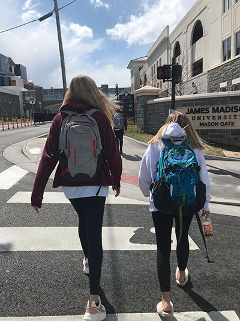
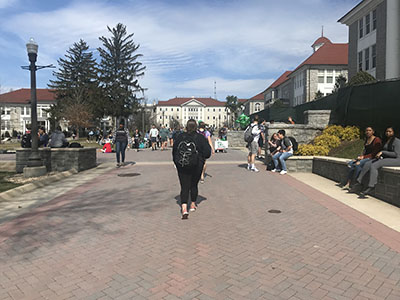
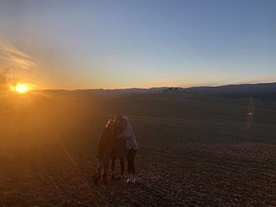
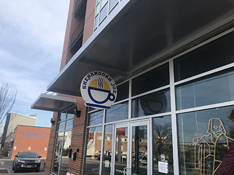

Students walking across MLK to get to classes
Photos

Students attending Philosophy 101 class in Burrus Hall
Harrisonburg "The Friendly City"
Harrisonburg, home to James Madison University and Eastern Mennonite University Students, is a city located in the Shenandoah Valley. With beautiful mountains surrounding this area, Harrisonburg is a city that is worth visiting. The atmosphere is filled with happy, excited students, and Harrisonburg residences who are easy to get along with. Included on this page are many photos showcasing life on JMU's campus and in Downtown Harrisonburg.
From getting a hot cup of coffee at Shenandoah Joe's, to taking adventerous car rides through the mountain, there is always something to do in Harrisonburg. Urban Exchange is a housing complex located in the heart of downtown Harrisonburg. many students are housed here and find that it is an easy 10 minute walk to campus. Located under this apartment complex are shops like Shenandoah Joe's, Benny's Pizza, and even breweries.


Students switching classes on the Quad

The beautiful sunset of the Shenandoah Valley

Shenandoah Joe Coffee Shop under Urban Exchange

{kind=link}
{kind=link}
{kind=link}
{kind=link}
{kind=link}